Bocetos
Funcionalidad 1 (Gestión de protectoras)
Nuestra página web tendrá una gestion de protectoras de animales, en la cual se incluirá el alta, baja y modifiicación de los perfiles de las protectoras
Boceto 1.1
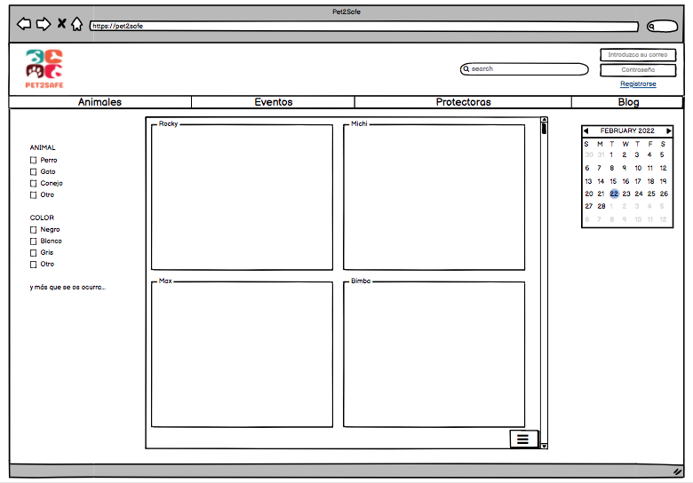Esta es la ventana que le aparecerá al usuario nada más entrar a la web sin loguearse. Aparecen cuatro botones, Animales, Eventos, Protectoras y Blog, que en este caso los tres últimos al entrar en ellos reedirigirán a la ventana de registro. Se pueden visualizar los tipos de animales, y se pueden clasificar los anuncios en función del tipo de animal o del color del mismo. En la esquina superior derecha aparece un formulario para iniciar sesión y un enlace para registrarse, que le lleva a la página de registro qu aparece explicada abajo.
Boceto 1.2
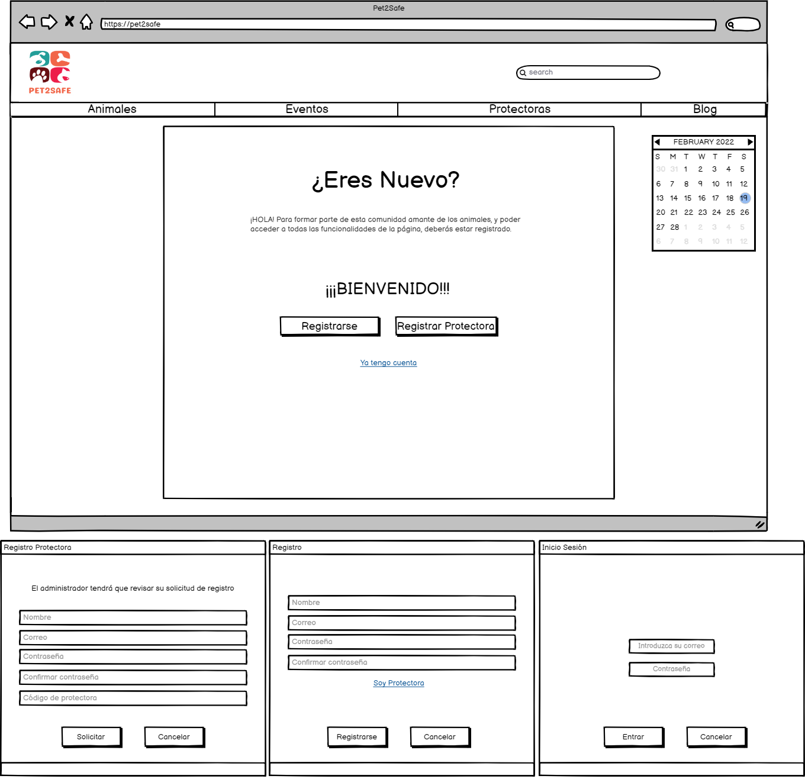Al hacer click en Eventos, Protectoras o Blog sin haber iniciado sesión, al usuario le aparecerá esta ventana de bienvenida para que se pueda registrar en función de si es una protectora, si es un usuario normal o si ya tiene una cuenta en la plataforma. Dependiendo del tipo de usuario a registrarse, se le mostrará una ventana distinta. La primera es de protectoras, en la que se distinguen distintos campos como el nombre o el correo, junto a una contraseña que el usuario debe especificar. El administrador le debe validar la cuenta para que pueda ser activada en la plataforma. Las otras dos ventanas son para usuarios que quieren entrar en la web para adoptar o ver los animales, para ello su registro no lo tiene que validar el administrador. En la ventana de registro del usuario normal, se incluye un link por si el usuario es una protectora y ha entrado ahí por error.
Boceto 1.3
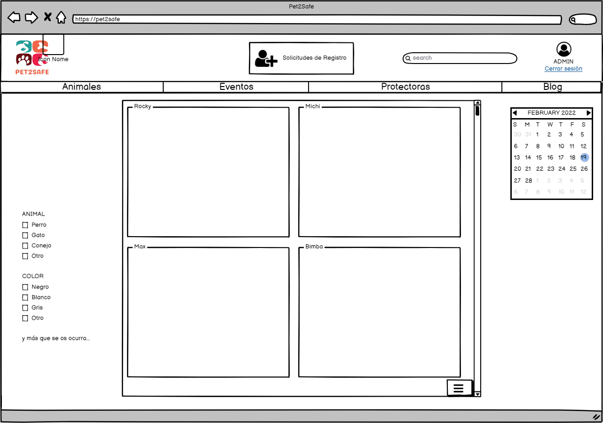Esta es la página principal que se le mostrará al administrador del sistema. Se le muestran los anuncios de los animales, con la opción de clasificar en función del tipo de animal y del color del mismo, pero la diferencia es que en la parte superior se muestra un botón "Solicitudes de Registro" para validar las cuentas pendientes de registro de las protectoras. En el lateral derecho se muestra un calendario en el que se marcan los próximos eventos que se van a producir.
Boceto 1.4

Cuando el admin le da al botón superior "Solicitudes de Registro", le aparece esta página. En ella aparecen las distintas protectoras que en la ventana de "Registro de protectoras" han solicitado registrarse, con los datos que han puesto en dicha ventana. El administrador cuenta con dos botones para registrar o para denegarlo. Al clicar en registrar, se le abre un formulairio para que este con los datos recibidos por la protectora, la de de alta en el sistema.
Boceto 1.5

Desde esta página, a la que se accede desde la pestaña de Protectoras, el administrador puede visualizar las protectoras que están dadas de alta en la plataforma. Desde aquí se puede ver su foto, el nombre de la protectora y una descripción de la misma. También existe la posibilidad de darlas de baja del sistema.
Boceto 1.6
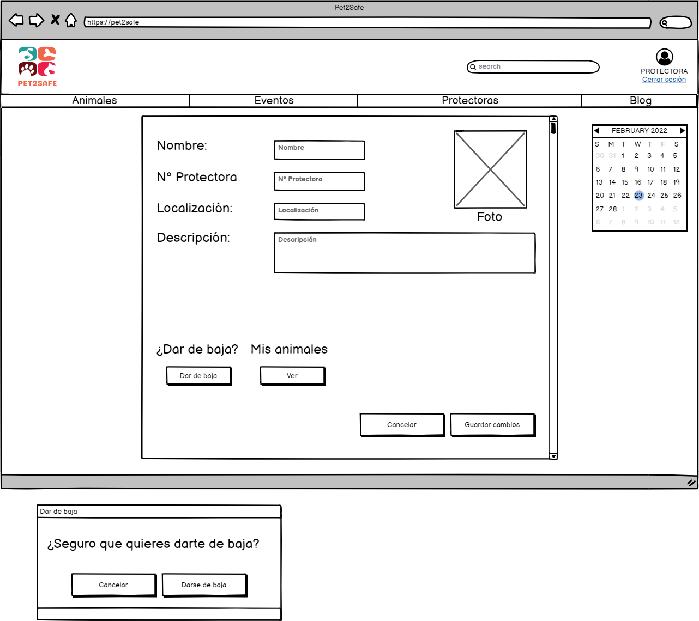Cuando el usuario es una protectora, para modificar su perfil o darse de baja, tiene que clicar en su foto de usuario, desde donde puede modificar el número de protectora asociado, además de que se le muestra un botón para acceder fácilmente a la sección de "Mis animales".
Funcionalidad 2 (Gestión de fichas de animales)
Esta funcionalidad se basa en el alta, baja y modificacion de los animales por parte de las protectoras. También se podrá cambiar el estado de los animales de visible a no visible si asi se desea, además se podrán gestionar consultas concretas de los animales que se encuentran en la plataforma.
Boceto 2.1

Cuando el usuario registrado es una protectora, en la pestaña Animales se muestran los anuncios de los animales de todas las protectoras que estan activos en la plataforma, pero con un botón que permite mostrar los animales que pertenezen a la propia protectora.
Boceto 2.2
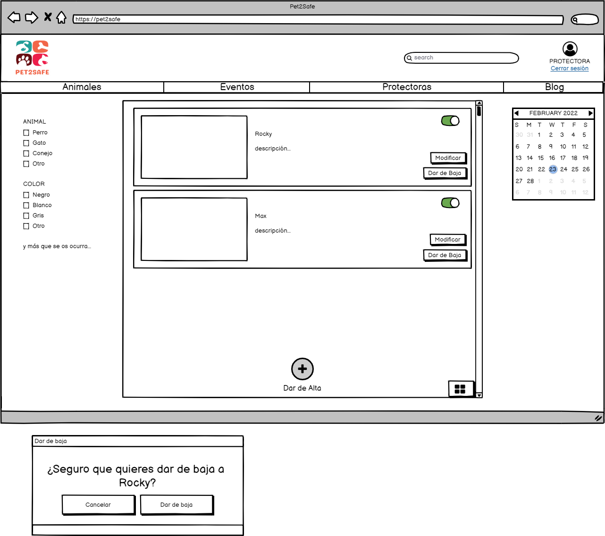En esta página se muestran los animales de la protectora (accediendo a ella desde el botón descrito en el anterior boceto). Cada animal cuenta con una imagen, nombre y descripción. Hay un botón deslizante que permite hacer visible o oculto el animal en la web, y dos botones más para modificar algún parámetro o eliminar el animal de la base de datos. Los animales se pueden clasificar para que se muestren en función del tipo o del color, mediante los selecctores de la parte izquierda. En la parte inferior hay un botón que permite registrar un nuevo animal en la base de datos. Cuando se quiere dar de alta, se muestra lo siguiente:
Boceto 2.3
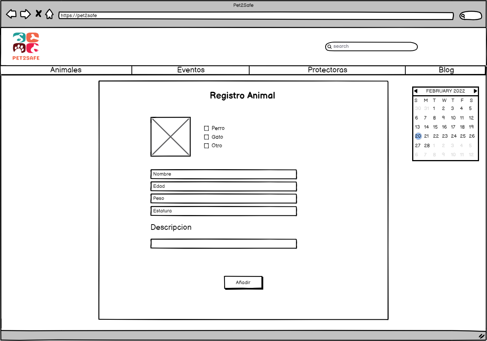En esta ventana, se puede elegir una foto para el animal, se permite elegir el tipo de animal que se va a registrar, y hay diversos campos para añadir el nombre, la edad del animal, el peso y la estatura. También hay un campo de texto que permite introducir una descripción. Cuando todo está completo, se le da al botón añadir y se vuelve a la ventana de "Mis animales". Cuando se quiere modificar un animal ya registrado en la base de datos, se presiona del botón "Modificar" y se muestra lo siguiente:
Boceto 2.4
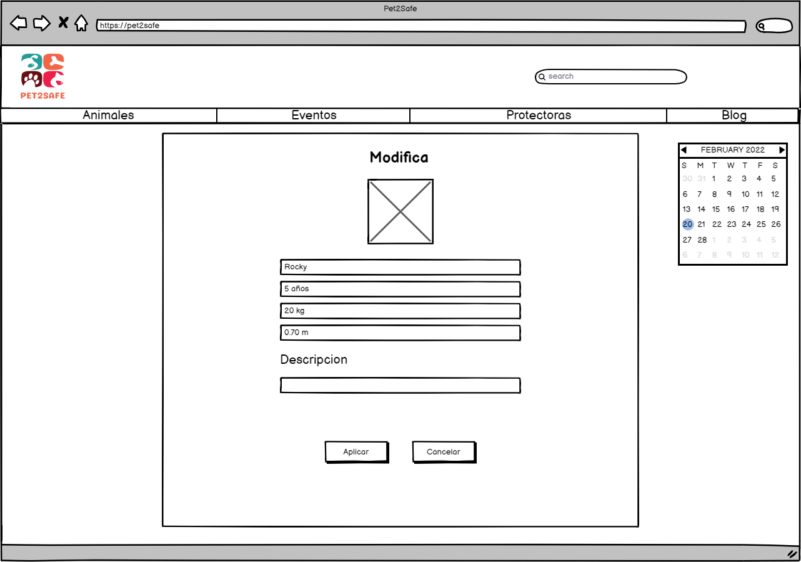La ventana es similar a la de "Añadir Animal", la única diferencia es que en "Modificar" se muestran los datos que estaban guardados en la base de datos.
Funcionalidad 3 (Gestión del proceso de adopción de un animal)
Los clientes tendrán la posibilidad de solicitar adopciones de animales concretos a las protectoras, y estás, tendrán la capacidad de examinar los perfiles de los clientes para aprobar o rechazar las solicitudes.
Boceto 3.1
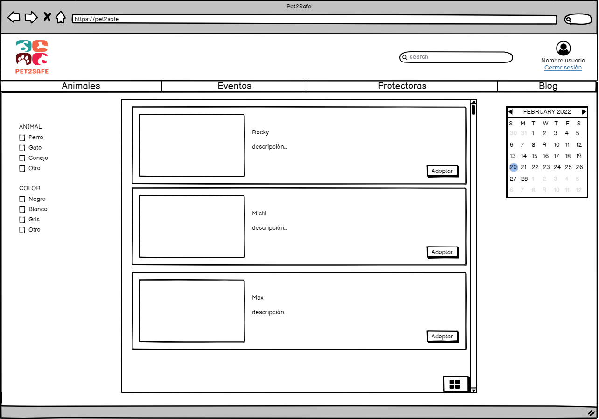Desde el punto de vista del cliente (que quiere ver qué animales hay para adoptar), esta es la página donde están todos los anuncios de los animales (pestaña Animales de la barra superior). Los anuncios se pueden clasificar en función del tipo de animal y de su color. Cada anuncio cuenta con una foto, el nombre del animal y una breve descripción. La vista por defecto es en formato tarjetas, pero también se puede cambiar la vista a cuadrícula. Cuando el usuario presiona el botón adoptar, se le redirige a la siguiente página:
Boceto 3.2
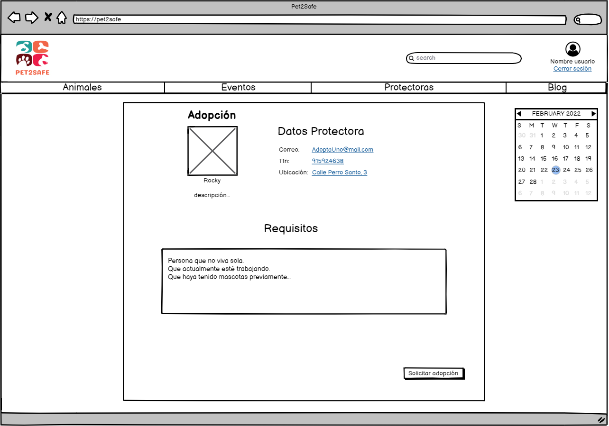En esta ventana, el cliente interesado en el animal puede ver más información acerca de la protectora que tiene al animal, con su correo, teléfono y dirección. También se indican los requisitos necesarios para poder adoptar al animal en cuestión. Además será aquí donde se solicite la adopcion.
Boceto 3.3
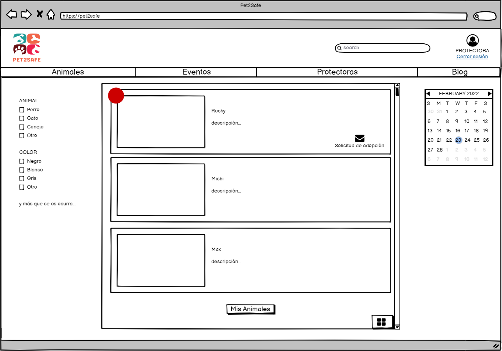En esta página se muestran las solicitudes de adopción, desde el punto de vista de la protectora, con un punto rojo indicando que ese animal ha sido solicitado. Si se pulsa sobre "Solicitud de adopción", se reedirige a la pantalla para aceptar la adopción. En el boton de mis animales se mostraran unicamente los que pertenezcan a la protectora, incluidos los que tienen una solicitud de adopción.
Boceto 3.4
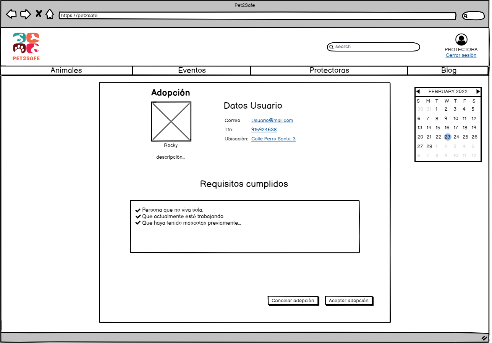Cuando se hace click sobre "Solicitud de adopción", aparece esta ventana, para consultar la información del usuario, ver los requisitos que este cumple, y aprobar o denegar la solicitud de adopción.
Boceto 3.5
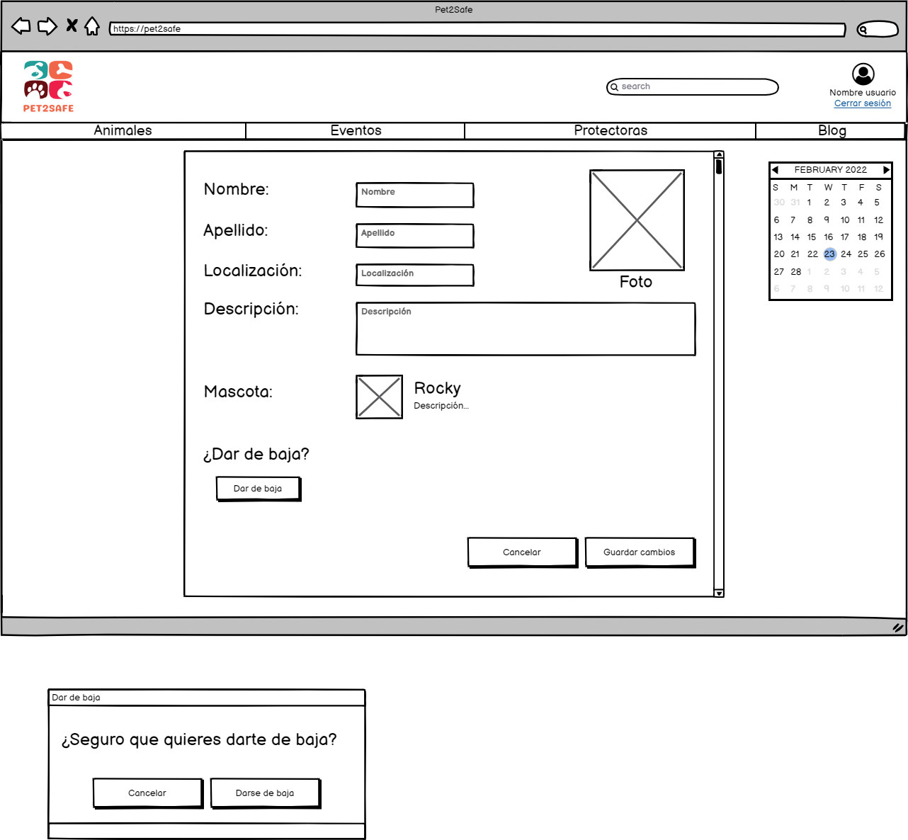Por otro lado, cuando un cliente adopta una animal, a este se le añade a su perfil, y es visible por el usuario pulsando en el icono de la esquina superior derecha.
Funcionalidad 4 (Blog / noticias de interés)
Uno de los apartados de la pagina web será un blog en el que apareceran noticias y cualquier tipo de entradas que quieran hacer los usuarios registrados y protectoras, también se podran organizar por favoritos y por los posts publicados por el propio usuario.
Boceto 4.1
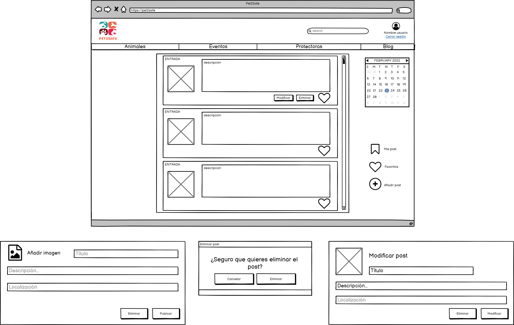La pestaña "Blog" muestra al cliente los post con información sobre protectoras, eventos, etc, en formato tarjetas. El cliente (registrado previamente) puede añadir posts al blog, modificar los que ya ha añadido, o guardar aquellos que le guste en favoritos. Al añadir un post, se crea un diálogo para que introduzca una imagen, el título, una descripción y localización. El botón de Mis posts filtra de forma que solo aparezcan los posts que ha escrito el usuario y el de Favoritos filtra los que ha marcado como favoritos. Para las protectoras estas funcionalidades son las mismas.
Boceto 4.2
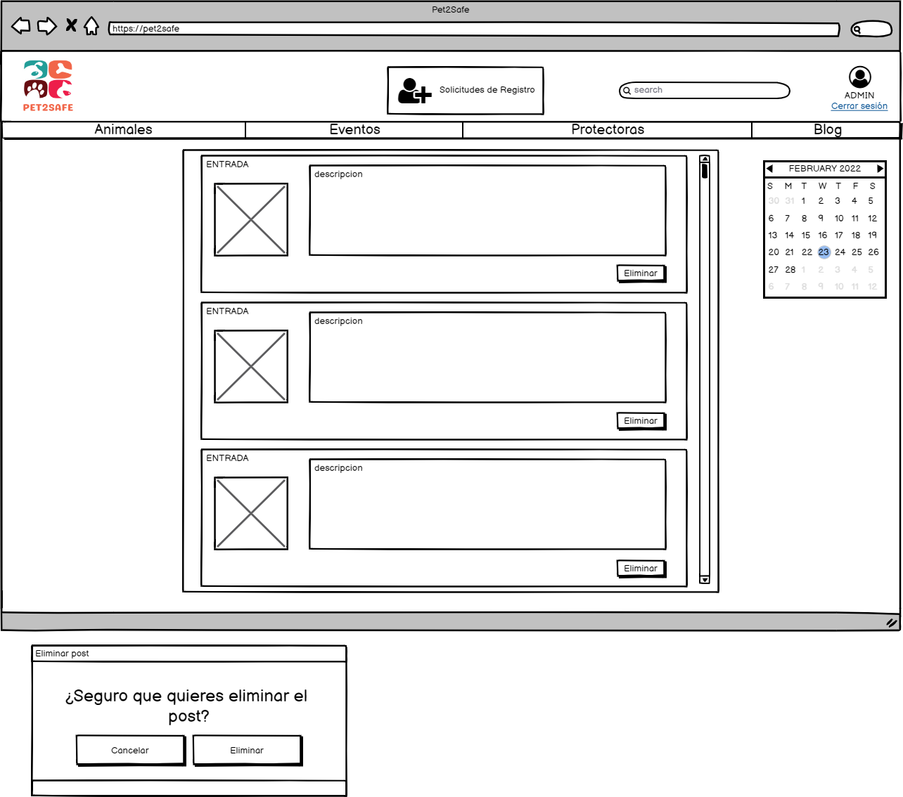El administrador unicamente podrá visualizar y eliminar los posts que crea convenientes.
Funcionalidad 5 (Comunicación entre protectoras)
Esta funcionalidad se basa en la comunicacion lineal entre protectoras. Se realizara a partir de un chat en el cual pueden hablar entre ellas o incluso solicitar traslados de animales.
Boceto 5.1
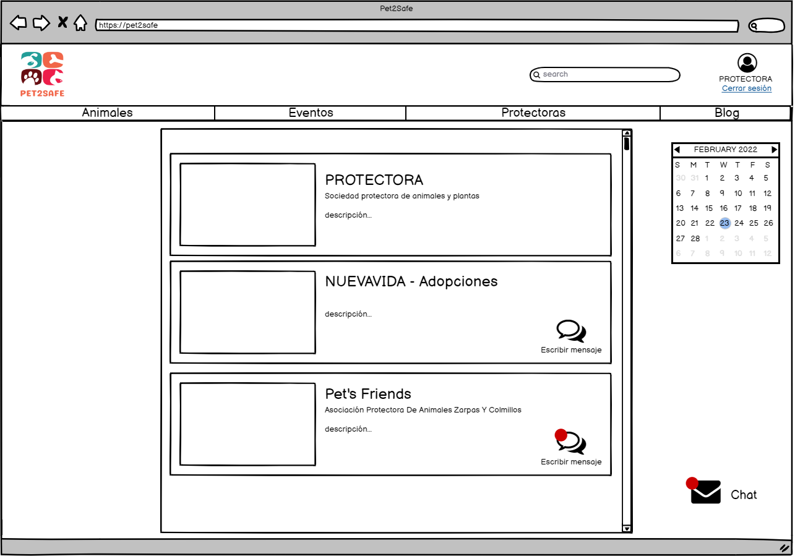En esta página, se muestran todas las protectoras registradas, con la posibilidad de intercambiar mensajes entre ellas. El botón de "Escribir mensaje" abre la conversación de chat directo con esa protectora. El apartado Chat nos lleva a la página de chats de la protectora, donde puede hablar con las demás protectoras y realizar traslados de animales. Si aparece el icono con un ciruculo rojo es que tiene mensajes sin leer.
Boceto 5.2
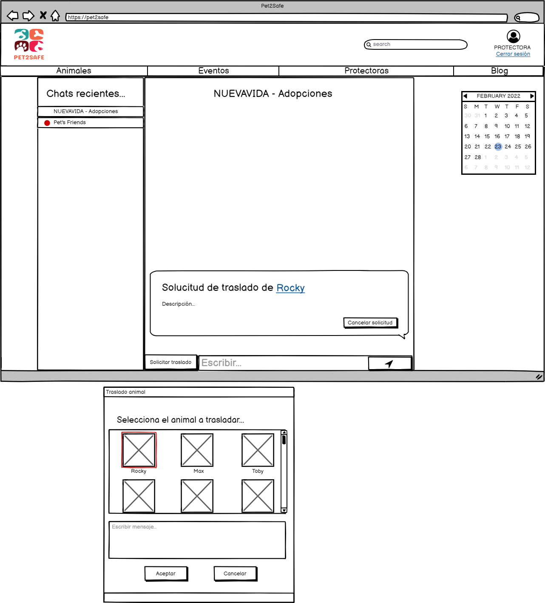En estra ventana se puede ver la interfaz del chat en la que se podran intercambiar mensajes con las protectoras y ademas solicitar traslados de animales de una protectora a otra. Al clicar en Solicitar traslado, se abre la ventana de traslado de animal, desde la que se podrá seleccionar el animal que se desea trasladar, así como incluir un mensaje de acompañamiento a la solicitud. Al pulsar en Aceptar, se encía un mensaje automático a la otra protectora, pudiendo este cancelarse siempre y cuando la otra protectora no haya contestado.
Boceto 5.3
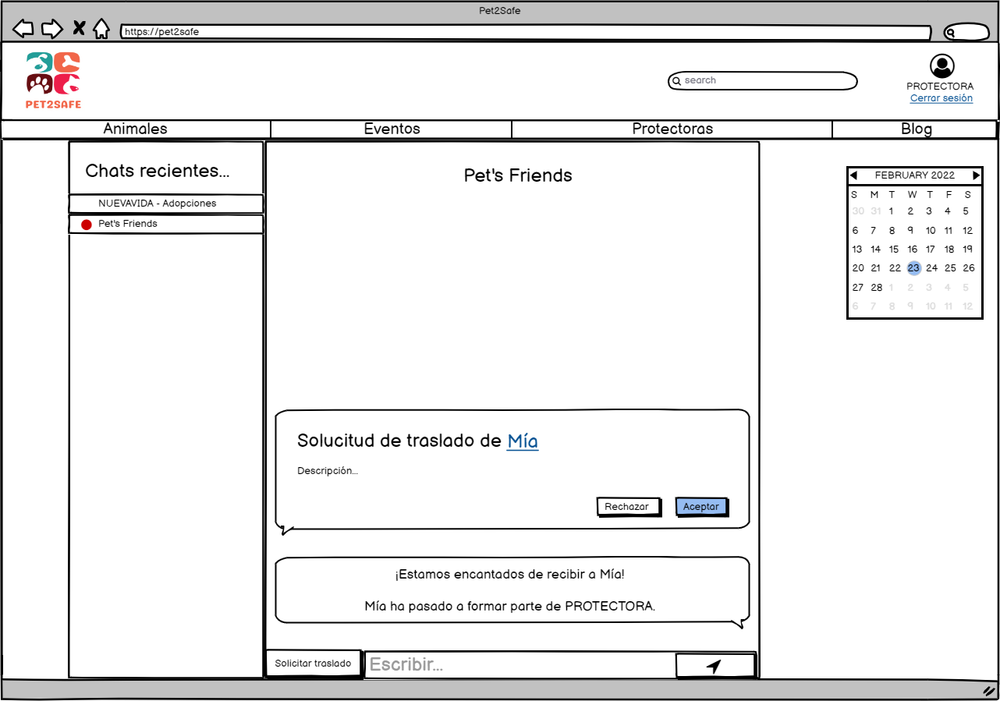Al acepta o rechazar una solicitud de traslado se envía un mensaje automático con la respuesta a esta. En caso de aceptar, el animal deja de estar en el apartado de Mis animales de la otra protectora y pasa a estar en la que lo acepta.
Funcionalidad 6 (Gestión de eventos)
Por último, la página dispondra de un gestor de eventos, mercadillos etc... Los cuales seran las propias protectoras quienes los anuncien. Además se podra confirmar la asistencia a los mismos por parte de los usuarios y consultar la cantidad de asistentes y protectoras participantes.
Boceto 6.1
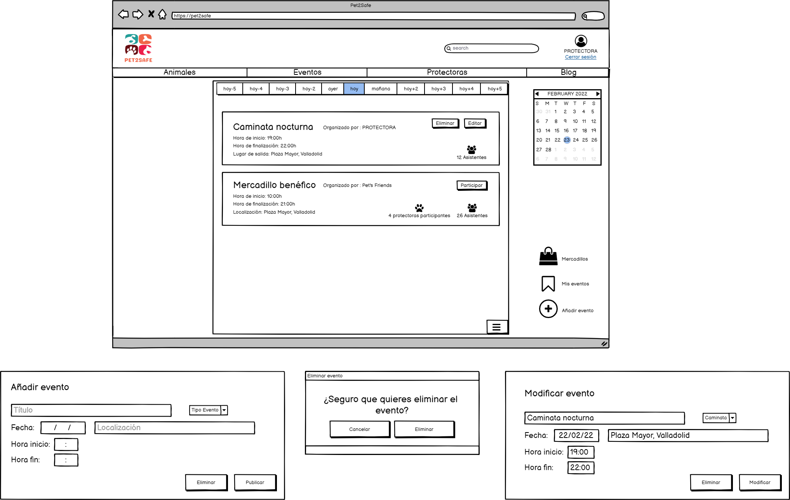El segundo botón "Eventos" muestra esta página, en el que aparecen ordenados cronológicamente los eventos próximos que tendrán lugar. Se pueden ordenar en función del día del evento, seleccionando en la parte superior el día a mostrar. Cuando el usuario es una protectora se le muestra la lista con los eventos y un botón por cada uno con la posibilidad de modificarlo o eliminarlo de la base de datos. Si el evento no ha sido publicado por la misma cuenta y el evento se trata de un mercadillo, se visualiza un botón de participar. Al clicar en participar, se incrementa el contador de protectoras participantes y la protectora pasa a participar en el mercadillo benéfico, quedando guardado en el apartado Mercadillos. Al clicar en Mis eventos, filtra según los eventos publicados por la protectora, y al clicar en Mercadillos, filtra según los mercadillos en los que la protectora ha marcado que participa. A la derecha se muestran tres botones, los anteriores mencionados y el de Añadir evento, que al clicarlo muestra su correspondiente diálogo.
Boceto 6.2
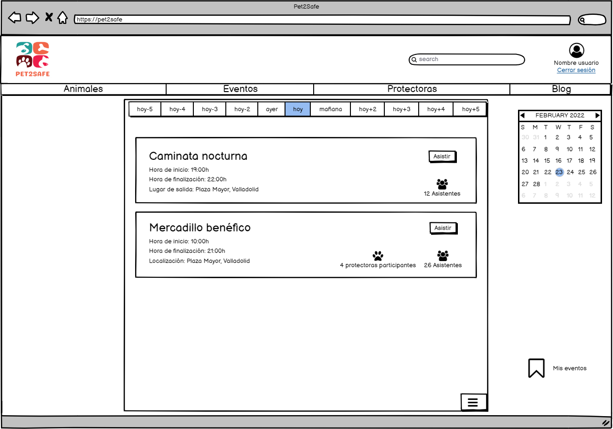Cuando el usuario es un cliente, se le muestra la lista con los eventos y un botón por cada uno con la posibilidad de asistir al evento. Al clicar en asistir, se incrementa el contador de Asistentes y el evento queda guardado para el usuario en el apartado Mis eventos. Al clicar en Mis eventos, filtra por los eventos a los que el usuario ha marcado que asistirá.
Boceto 6.3
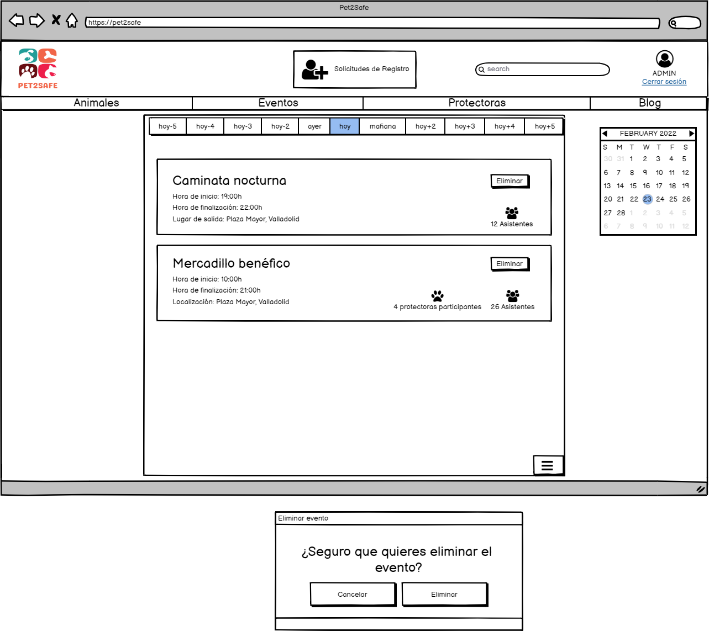El administrador puede eliminar el evento, y ver cúantos usuarios y protectoras asistirán.